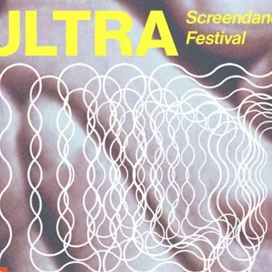

da sab 10 ott a ven 23 ott
Ultra Screendance festival 4^ edizione
dal 16 ottobre 2026 al 23 ottobre 2026 Tre appuntamenti tra cinema, danza e immagini in movimento: un workshop gratuito per bambini curato dall’artista Jacopo Jenna, una serata dedicata al coreografo Iztok Kovač e una proiezione speciale in collaborazione con Eccentrico…
 Indicazioni
Indicazioni
- Costi e prenotazioni
- Costo non indicato · Prenotazione non indicata
- Programma
- Programma da verificare. Apri la fonte ufficiale per orari e possibili aggiornamenti.
- In caso di maltempo
- Nessuna indicazione specifica pubblicata.
- Note
- Acquisito automaticamente dalla fonte.
L’EVENTO
Descrizione completa
Tre appuntamenti tra cinema, danza e immagini in movimento: un workshop gratuito per bambini curato dall’artista Jacopo Jenna, una serata dedicata al coreografo Iztok Kovač e una proiezione speciale in collaborazione con Eccentrico Cineclub. ULTRA è una rassegna internazionale, unica in regione, dedicata alle molte forme con cui il corpo può essere immaginato, registrato e trasformato attraverso cinema, videoarte, animazione e sperimentazione audiovisiva. Ogni anno ULTRA rinnova la propria proposta, sperimentando forme e modalità diverse e ponendo al centro di questa ricerca la videodanza: un linguaggio ibrido, globale e in continua evoluzione, che attraversa film, videoarte, animazione e sperimentazioni narrative e mette in relazione il corpo, la coreografia e lo sguardo. È attraverso una selezione di lavori provenienti da tutto il mondo che il festival esplora ogni volta prospettive diverse su questa relazione. Accanto alle proiezioni, ULTRA propone talk, workshop e incontri pensati per mettere in dialogo artisti, filmmaker, coreografi e pubblico, ampliando il programma e offrendo diverse possibilità di confronto e partecipazione. ULTRA è così uno spazio d’incontro e confronto in cui la videodanza diventa uno strumento per promuovere una visione ampia e inclusiva di corpi, culture e pratiche artistiche, favorendo al contempo riflessione, formazione e sperimentazione creativa.
10 OTTOBRE 16:00 – 18:30, Le(Serre
DÉSIR MIMÉTIQUE a cura di JACOPO JENNA
Laboratorio gratuito per bambine e bambine dedicato al rapporto tra immagini e uso del corpo.
7-10 anni (posti limitati)
Info e prenotazioni ultrascreendance@gmail.com
16 OTTOBRE ore 20, Cinema Visionario
IZTOK KOVAČ
Durante questa serata verranno presentati Vertigo Bird e Dom Svobode, alla presenza del coreografo e interprete Iztok Kovač. Diretti da Sašo Podgoršek e realizzati nel 1997 e nel 2000, questi lavori continuano a essere una fonte di ispirazione per coreografi, registi e danzatori, dimostrando come la ricerca artistica più rigorosa sappia attraversare il tempo senza perdere la propria capacità di interrogare il presente. 23 OTTOBRE ore 20, Cinema Visionario
PAS DE DEUX
Serata realizzata in collaborazione con Eccentrico Cineclub e dedicata ad alcune opere di Ed Emshwiller, pioniere del cinema sperimentale americano, messe in dialogo con la ricerca di artisti e artiste contemporanei. Tra i film selezionati, particolare attenzione sarà dedicata alle sperimentazioni realizzate da Emshwiller in collaborazione con il coreografo Alwin Nikolais e con la danzatrice e coreografa Carolyn Carlson.
Maggiori informazioni sul sito
IL PROGRAMMA
Programma e orari
Appuntamenti raccolti dalle fonti elencate. Dove manca un orario, non è ancora disponibile in questa scheda.
Programma pubblicato
- 10 OTTOBRE 16:00 – 18:30, Le(Serre
INFORMAZIONI UTILI
Prima di partire
- Controllare la fonte prima di partire.
ORGANIZZAZIONE